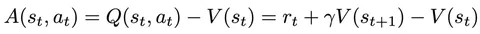
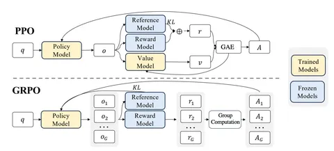
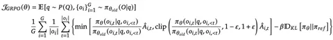

Сегодня — о двух методах стабилизации PPO. Один вытекает из другого и каждому посвящена отдельная статья.
О PPO подробнее мы уже рассказывали в другом нашем канале — ML Underhood. Здесь же сосредоточимся на частностях. Традиционно в PPO считается некоторый advantage. Он вычисляется для пары префикса и ответа и показывает, на сколько конкретный ответ лучше среднего. Чтобы определить advantage нужно из суммарной награды префикса и ответа (Q в первой формуле выше) вычесть среднюю награду (V), которую генератор набрал бы, если бы стартовал с этого префикса.
Value-функцию принято обучать отдельной моделью на прогнозирование средних наград. Однако с V-моделью есть некоторые сложности. Во-первых, она большая и сопоставима по размерам с генератором. Во-вторых, её нужно инферить, на что требуются вычислительные ресурсы. А в-третьих, она обычно выдает не очень хорошие результаты. Поэтому было бы круто придумать способ избавиться от V-модели в PPO, ведь она нужна только для снижения дисперсии оценки лосса. Авторы обеих статей поставили перед собой именно эту задачу.
Авторы статьи DeepSeekMath предлагают метод, который называется Group Relative Policy Optimization (GRPO). В его рамках две модификации:
1. Не обучать V-модель. Вместо этого оценить значение средней награды методом Монте-Карло. Ничего сложного: вместо генерации одного ответа на запрос сгенерировать несколько ответов, а среднюю награду, полученную за эти ответы на запрос, использовать как V. При подсчете advantage из награды каждого ответа вычитается эта средняя награда. Таким образом, от V-модели избавляются с помощью увеличения количества генераций (схема на втором изображении).
2. В PPO используется KL-штраф за отклонение от SFT-модели. Обычно этот штраф вычитают из награды, чтобы PPO одновременно наращивал награду и не отходил далеко от SFT. Авторы предлагают добавлять штраф прямо к лоссу — это лишает нас каких-то интересных теоретических свойств алгоритма, но делает процедуру оптимизации намного легче (третье изображение с формулой).
Авторы второй статьи — VinePPO — опираются на DeepSeekMath и развивают GRPO в контексте математических задач. В GRPO, в отличие от классического PPO, V-функция для всех токенов ответа получается одинаковой. Так устроен алгоритм, ведь туда записана просто средняя награда за несколько ответов.
Для ответов, в которых есть цепочки рассуждений, это может быть не очень репрезентативно: при решении математических задач, удачный ход в рассуждении должен значимо повышать ожидаемую награду за ответ, тогда как ошибка в рассуждениях — наоборот, понижать.
Авторы предлагают разбивать ответ на смысловые блоки — по переносам строки. точкам или запятым, которые находятся вне формул — и для каждого из них оценивать V-функцию так же, как это делается в GRPO. То есть генерировать по несколько продолжений из частично готового ответа.
Хоть идея и проста, эффективно её реализовать довольно трудно. А ещё этот метод требует существенно большего числа генераций во время обучения. Авторы честно признаются, что их метод медленнее обычного PPO, но показывает неплохие результаты.
Разбор подготовил
Душный NLP
